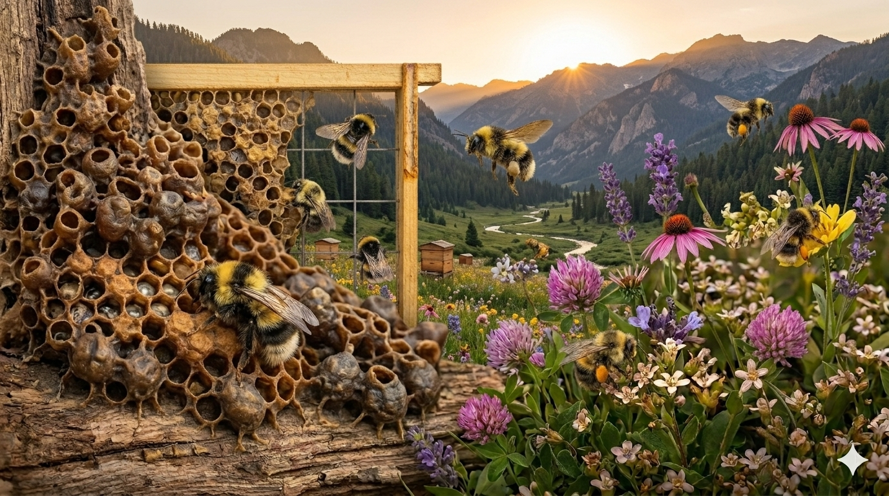
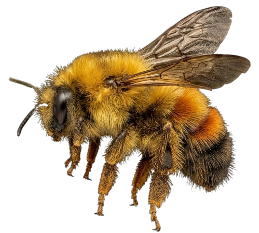
🐝'">Las abejas sin aguijón de la tribu Meliponini llevan millones de años en la selva de Tabasco. Custodias del ecosistema maya, productoras de miel medicinal y aliadas insustituibles de la biodiversidad tropical.
Los abejorros nativos o meliponinos (tribu Meliponini) son abejas sin aguijón funcional originarias de las regiones tropicales y subtropicales de América. En México se conocen más de 46 especies, siendo las más representativas del sureste los géneros Melipona, Trigona, Scaptotrigona y Frieseomelitta.
A diferencia de la Apis mellifera introducida por los europeos, estas abejas no pueden picar y forman colonias más pequeñas, de entre 300 y 10,000 individuos según la especie. Su historia con el ser humano es milenaria: los mayas las criaban en troncos huecos llamados jobones y su práctica apícola —la meliponicultura— continúa viva hoy en Tabasco, Chiapas y la Península de Yucatán.
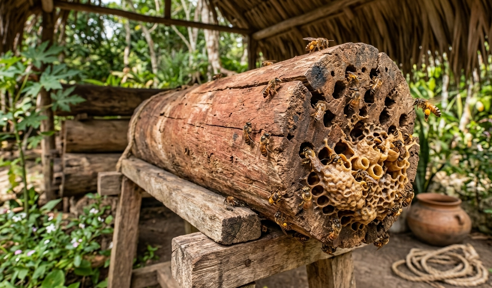
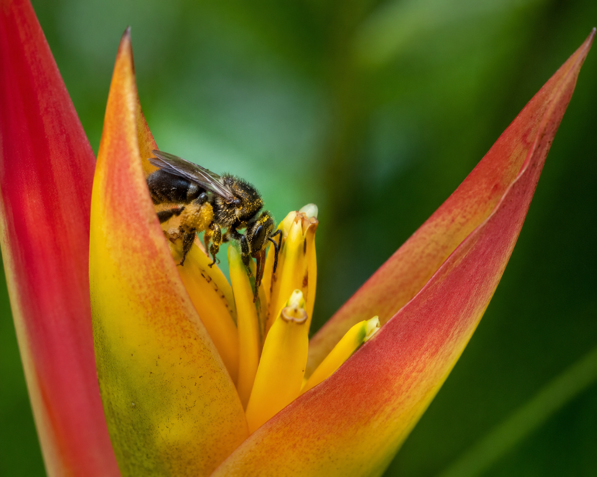
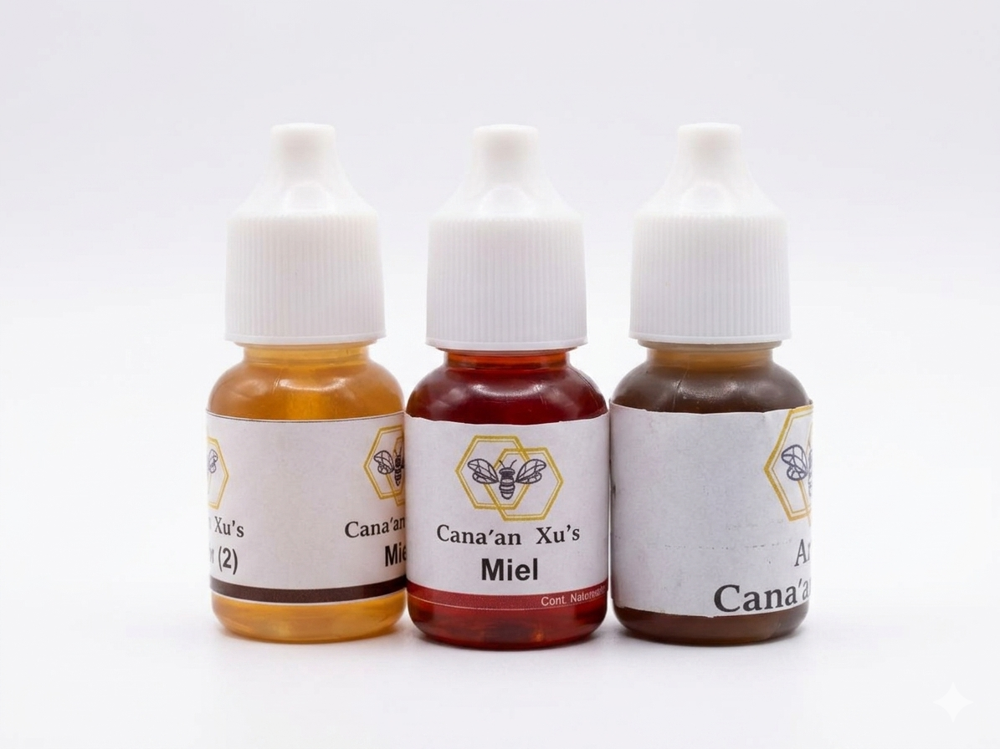
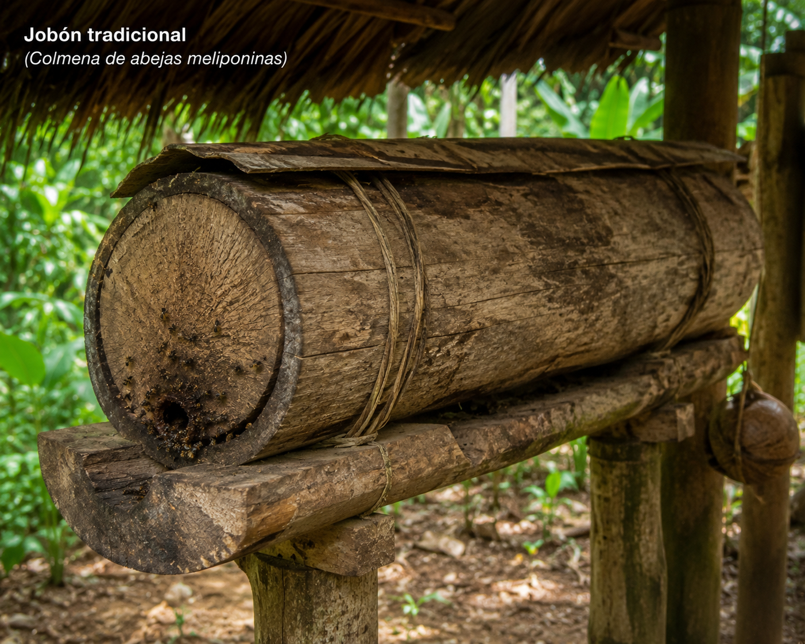
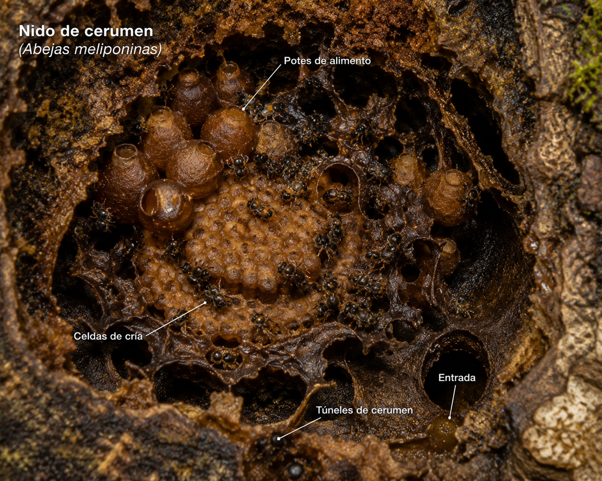
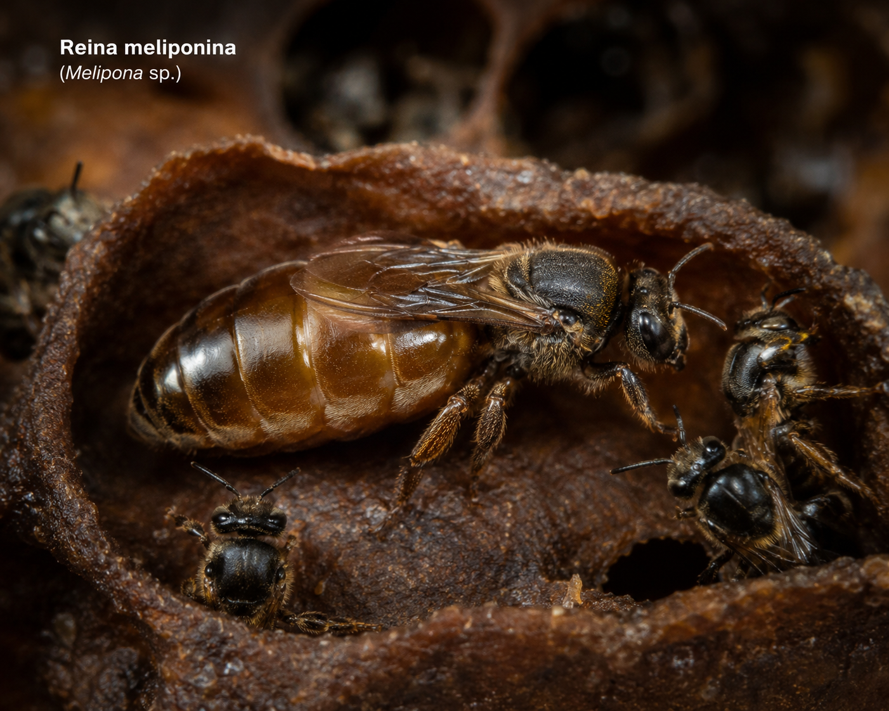
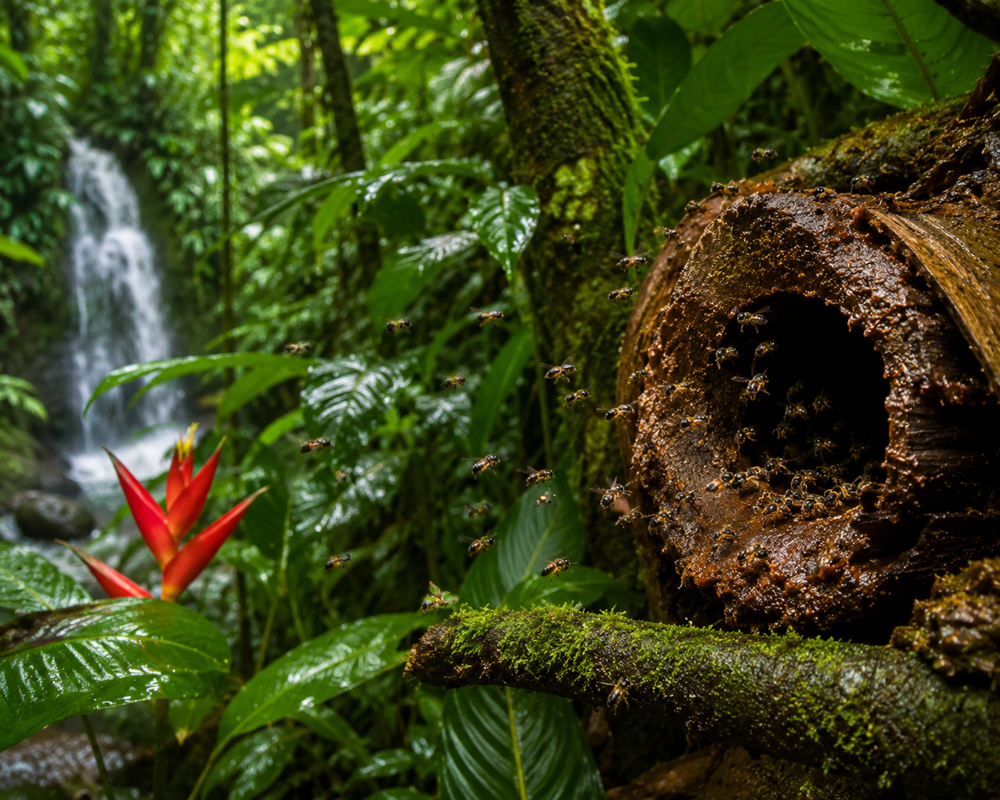
México alberga más de 46 especies de meliponinos. En Tabasco destacan las siguientes, con nombres en maya yucateco o nombres locales:
| Nombre científico | Nombre común / maya | Tamaño | Miel / año | Característica destacada |
|---|---|---|---|---|
| Melipona beecheiiXunan Kab / Abeja Real Maya | Xunan Kab | ~11 mm | 1 – 3 kg | La más valorada por los mayas; miel con propiedades medicinales documentadas |
| Melipona solaniKantsák / Abeja Gorda | Kantsák | ~10 mm | 0.5 – 2 kg | Común en la Chontalpa; muy dócil y resistente al calor húmedo |
| Scaptotrigona pectoralisPool Kab / Abeja Canela | Pool Kab | ~7 mm | 2 – 5 kg | Mayor productora de miel entre las nativas; colonias numerosas de hasta 10,000 abejas |
| Trigona nigraCagafuego / Picandera | Cagafuego | ~5 mm | 0.5 – 1 kg | Defiende la entrada con resina pegajosa; muy abundante en la selva lacandona |
| Frieseomelitta nigraAbeja negra sin aguijón | Nohkab | ~6 mm | 0.3 – 0.8 kg | Miel oscura de sabor intenso; nidos en tallos y bambúes huecos |
| Nannotrigona perilampoidesMosquita / Abeja chiquita | Ts'unu'um | ~4 mm | 0.2 – 0.5 kg | Una de las más pequeñas; habita grietas en muros y oquedades urbanas |
Son polinizadores nativos irreemplazables. Cada especie está adaptada a las plantas de su región; perderlas significa perder también los árboles y frutos que dependen de ellas.
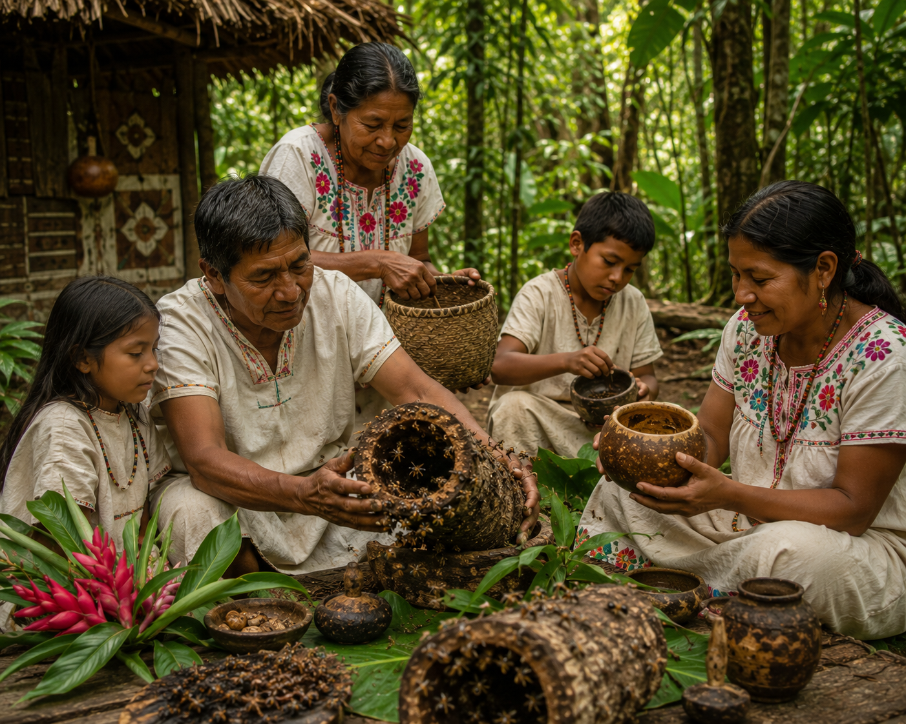
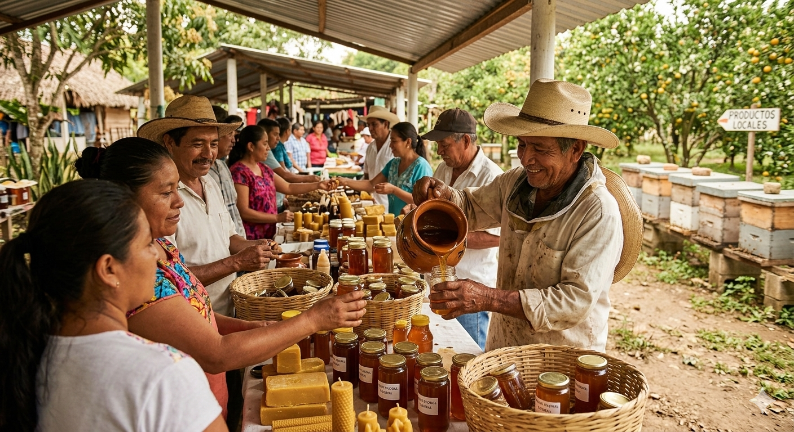
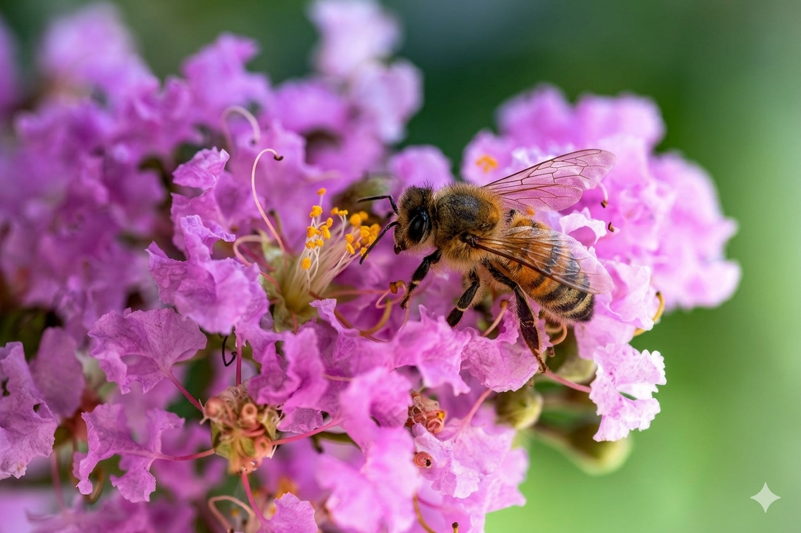

A diferencia del panal hexagonal de cera de la Apis mellifera, los meliponinos construyen su nido con cerumen —una mezcla de cera y propóleo— que le da resistencia, impermeabilidad y propiedades antibacterianas. El nido se divide en área de cría, donde las obreras depositan la mezcla de alimento y huevo en celdas operculadas, y el área de almacenaje, con potes redondos de miel y de polen.
La entrada del nido está sellada con una tobera de cerumen con un pequeño orificio, a veces mezclado con resinas vegetales aromáticas. Las guardianas defienden esta entrada con sus patas y mandíbulas, o bloquean la tobera con cera si sienten peligro.
La miel de meliponino es líquida, de color ámbar oscuro a dorado, con sabor agridulce característico que varía enormemente según la especie y las flores visitadas. En Tabasco, la floración de tzalam, ramón y flores de selva mediana produce mieles con notas silvestres complejas, muy apreciadas en mercados especializados y por la medicina tradicional.
Explora nuestra tienda con miel de meliponinos o visita nuestro centro si encontraste una colonia silvestre. Las rescatamos y les damos un hogar seguro.